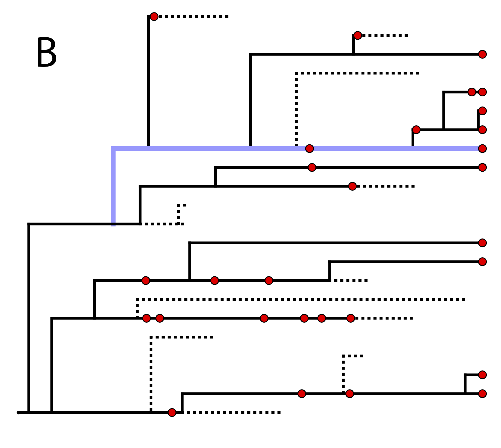
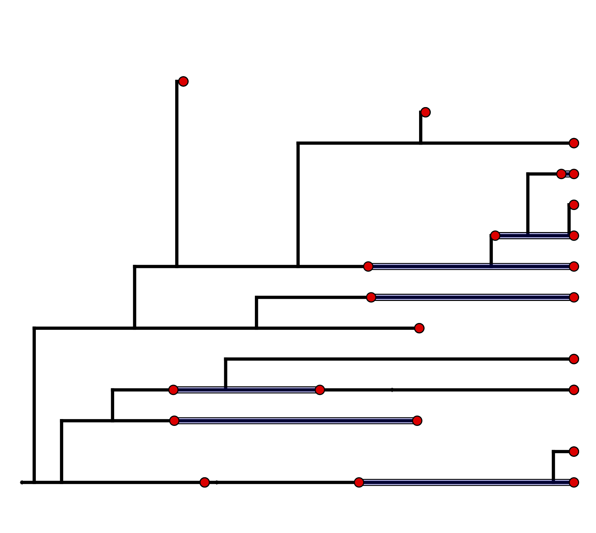
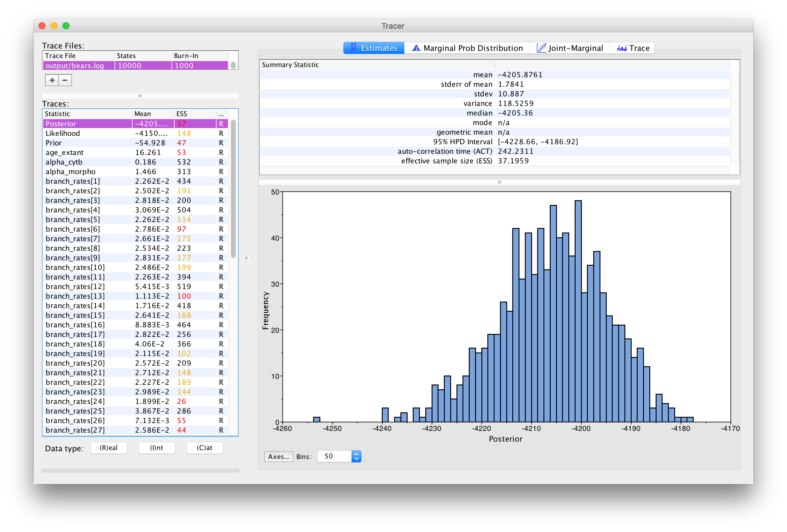
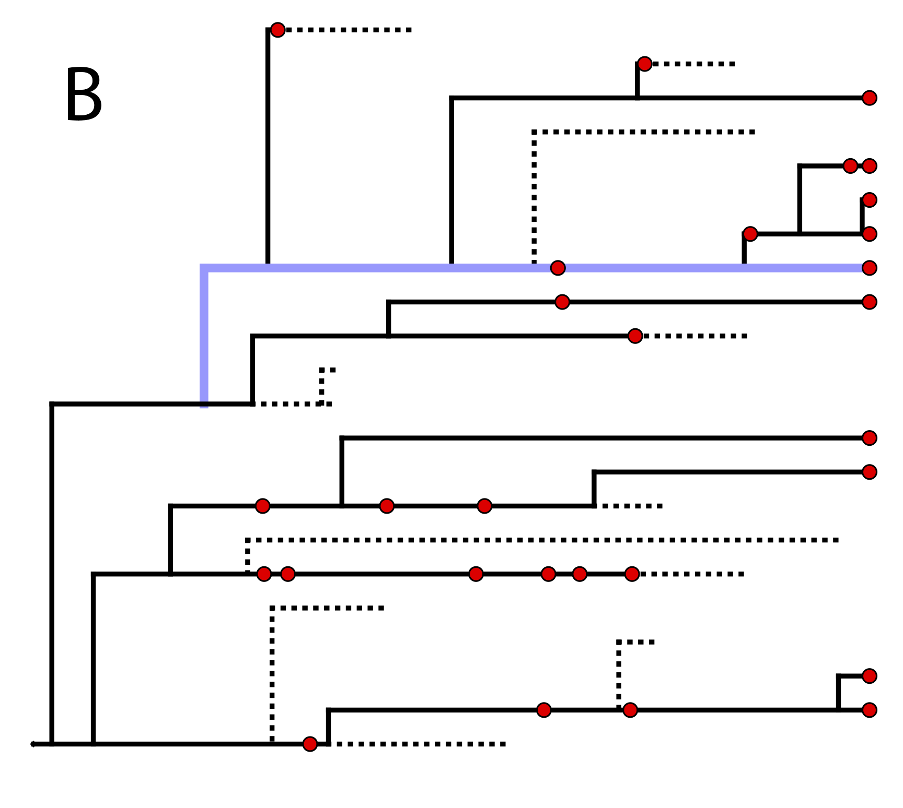
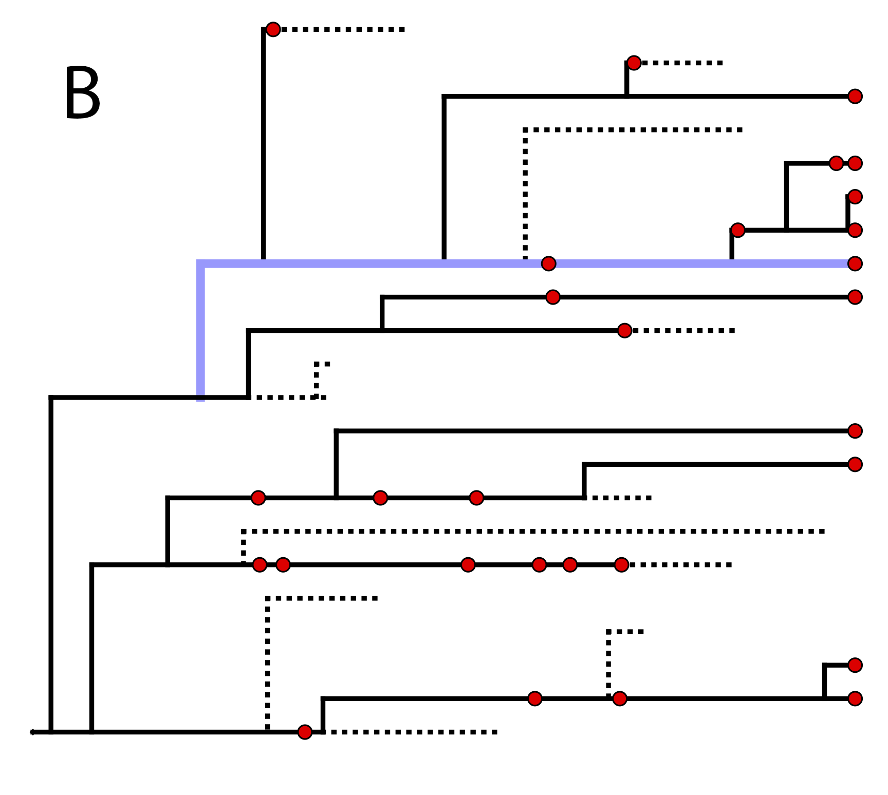

This tutorial demonstrates how to specify the models used in a Bayesian
“combined-evidence” phylogenetic analysis of extant and fossil species,
combining morphological and molecular data as well as stratigraphic
range data from the fossil record [e.g.,(Ronquist et al. 2012; Zhang et al. 2016; Gavryushkina et al. 2017)].
We begin with a concise
introduction to the models used in this analysis in the section,
followed by a detailed example analysis in
demonstrating how to apply these models in
RevBayes (Höhna et al. 2017) and use Markov chain Monte Carlo (MCMC) to
estimate the posterior distribution of dated phylogenies for data
collected from living and fossil bears (family Ursidae).
Introduction
The “combined-evidence” analysis described in this tutorial uses a
probabilistic graphical model (Höhna et al. 2014) integrating three separate
likelihood components or data partitions (): one
for molecular data (), one for
morphological data (), and one for
fossil stratigraphic range data ().
In addition, all likelihood components are conditioned on a tree
topology with divergence times which is modeled according to a separate
prior component (defined in ).
Modular components of the graphical model used in the “combined-evidence”
analysis described in this tutorial.
In we provide an example of a type of tree
estimated from a combined-evidence analysis. This example shows the
complete tree (A) and the “reconstructed tree”
(B).
We will describe the distinction between these two trees in
the section on .
One possible
realization of the specimen-level fossilized birth-death (described in section
) (A) The complete tree shows all lineages both sampled (solid
lines) and unsampled (dotted lines).
(B) The reconstructed tree shows only the sampled specimens, both fossil and extant.
Lineage Diversification and Sampling
The joint prior distribution on tree topologies and divergence times of
living and extinct species used in this tutorial is described by the
fossilized birth-death (FBD) process (Stadler 2010; Heath et al. 2014; Stadler et al. 2018). This
model simply treats the fossil observations as part of the process
governing the tree topology and branch times (the ‘Time Tree Model’ node in
). The fossilized birth-death process provides a
model for the distribution of speciation and sampling events i.e. tree topology,
speciation times, number of sampled living taxa, and
lineage samples before the present
(e.g. non-contemporaneous samples like
fossils or viruses). This type of tree is shown in .
Importantly, this model can be used with or
without character data for the historical samples. Thus, it provides a
reasonable prior distribution for analyses combining morphological or
DNA data for both extant and fossil
taxa—i.e. the so-called “combined-evidence” or “total evidence”
approaches described by Ronquist et al. (2012) and extended by Zhang et al. (2016) and
Gavryushkina et al. (2017). When matrices of discrete morphological characters
for both living and fossil species are unavailable, the fossilized
birth-death model imposes a time structure on the tree by
marginalizing
over all possible attachment points for the fossils on the extant tree
(Heath et al. 2014), therefore, some prior knowledge of phylogenetic
relationships is important.
The FBD model () describes the probability of the
tree and fossils conditional on the birth-death parameters:
$f[\mathcal{T} \mid \lambda, \mu, \rho, \psi, \phi]$, where
$\mathcal{T}$ denotes the tree topology, divergence times fossil
occurrence times and the times at which the fossils attach to the tree.
The birth-death parameters $\lambda$ and $\mu$ denote the speciation and
extinction rates, respectively. The ‘fossil
recovery rate’ is denoted $\psi$ and describes the rate at which fossils
are sampled along lineages of the complete tree. The sampling
probability parameter $\rho$ represents the probability that an extant
species is sampled, and $\phi$ represents the time at which the process
originated (called the ‘origin time’).
A graphical model of the fossilized birth-death model describing the
generation of the time tree (in
) used in this tutorial. The parameters of the
fossilized birth-death process are labeled in orange. The speciation,
extinction and fossilization rates are stochastic nodes (circles) drawn
from exponential distributions, while the origin time is uniformly
distributed. The sampling probability is constant node (square) and
equal to one for the tree in
and for the analysis in the exercise given in this tutorial.
This model represents the phylogenetic continuous-time Markov
chain that links the tree model to the other model components and the
observed sequence data. For more information on probabilistic graphical
models and their notation, please see (Höhna et al. 2014).
In the example FBD tree shown in , the
diversification process originates at time $\phi$, giving rise to $n=10$
species in the present, with both sampled fossils and
extant species. All of the lineages represented in A
(both solid and dotted lines) show the
complete tree. This is the tree of all extant and extinct lineages
generated by the process.
The complete tree is distinct from the
reconstructed tree (B) which is the tree
representing only the lineages sampled as extant taxa or fossils. Fossil
observations (non-extant red circles in ) are recovered
over the lifetime of the process along the lineages of the complete
tree. If a lineage does not have any descendants sampled in the present
(or at the moment it goes extinct),
it is lost and cannot be observed, these are the dotted lines in
A. The probability must be conditioned on the origin
time of the process $\phi$. The origin ($\phi$) of a birth-death process
is the starting time of the stem lineage, thus this conditions on a
single lineage giving rise to the tree.
An important characteristic of the FBD model is that it accounts for the
probability of sampled ancestor-descendant pairs (Foote 1996). Given
that fossils are sampled from lineages in the diversification process,
the probability of sampling fossils that are ancestors to taxa sampled
at a later date is correlated with the turnover rate ($r=\mu/\lambda$),
the fossil recovery rate ($\psi$), and the probability of sampling an extant taxon ($\rho$).
This feature is important,
particularly for datasets with many sampled fossils. In the example
(), several of the fossils have sampled
descendants. These fossils have solid black lines leading to the
present.
Assignment of fossil specimens to taxonomic species
The most basic version of the FBD treats individual fossil specimens as separate taxonomic entities. This is the standard specimen-level “Fossilized Birth Death Process” (implemented as FBDP in RevBayes).
However, in most cases taxonomic species are represented in the fossil record by multiple fossil specimens sampled at
different stratigraphic ages.
These stratigraphic ranges are the first and last occurrences observed for a single morpho-species in the fossil
record (for extant species, the last occurrence is the present day).
In order to compute the density of the FBD while accounting for this stratigraphic species range data, we need to assume some model of speciation that will allow us to assign fossil specimens to species. Stadler et al. (2018) describe an extension to the FBD which assigns lineages to taxonomic species through a process of asymmetric or “budding” speciation. This model assumes that at each asymmetric speciation event, one descendant species represents a new species, while the other descendant represents the continuation of the parent species. In this way, each lineage (and therefore all the fossil specimens sampled along that lineage) can be mapped to a unique species. An example realization of such a speciation process is shown in .
\(\implies\)

One possible realization of asymmetric speciation (light blue) along one lineage of the fossilized birth
death tree from .
(A) The highlighted lineage originates through an asymmetric speciation event by branching upward,
and then continues past additional speciation events by downward branching.
Fossil specimens lying along this path are assigned to the same taxonomic species.
(B) The same lineage is highlighted in the oriented tree with lineages representing the same species collapsed into straight lines.
Stadler et al. (2018) show how to compute the density of the “sampled tree”, which is obtained by pruning all unsampled lineages after asymmetric species identities have been assigned in the complete tree (). This gives rise to the “Fossilized Birth Death Range Process” (implemented as FBDRP in RevBayes). This is the model we will be using in this tutorial. It is important to note that the tips in the sampled tree represent the age of the youngest sample for each species.

The “sampled tree” is produced by pruning unsampled lineages from the oriented tree in B and collapsing intermediate fossil samples other than the first and last occurrences into stratigraphic ranges.
Nucleotide Sequence Evolution
The model component for the molecular data uses a general
time-reversible model of nucleotide evolution and gamma-distributed rate
heterogeneity across sites (the Substitution Model and Sites Model in ). This
model of sequence evolution is covered thoroughly in the
Nucleotide substitution models
tutorial.
Lineage-Specific Rates of Sequence Evolution
Rates of nucleotide sequence evolution can vary widely among lineages,
and so models that account for this variation by relaxing the assumption
of a strict molecular clock (Zuckerkandl and Pauling 1962) can allow for more
accurate estimates of substitution rates and divergence times
(Drummond et al. 2006). The simplest type of relaxed clock model assumes that
lineage-specific substitution rates are independent or “uncorrelated”.
One example of such an uncorrelated relaxed model is the uncorrelated
exponential relaxed clock, in which the substitution rate for each
lineage is assumed to be independent and identically distributed
according to an exponential density (). This is Branch Rates Model
for the Molecular Data () that we will use in this tutorial.
Another possible uncorrelated relaxed
clock model is the uncorrelated lognormal model, described in the
Relaxed Clocks & Time Trees
tutorial [also see Thorne and Kishino (2002)].
A graphical model of the
uncorrelated exponential relaxed clock model. In this model, the clock
rate on each branch is independent and identically distributed according
to an exponential density with mean drawn from an exponential hyperprior
distribution.
Morphological Character Evolution
For the vast majority of extinct species, fossil morphology is the
primary source of phylogenetically informative characters. Therefore, an
appropriate model of morphological character evolution is needed to
reliably infer the positions of these species in a phylogenetic
analysis. The Mk model (Lewis 2001) uses a generalized Jukes-Cantor
matrix to allow for the incorporation of morphology into likelihood and
Bayesian analyses. In its simplest form, this model assumes that
characters change states symmetrically—that a given character is as
likely to transition from a one state to another as it is to reverse. In
this tutorial we will consider only binary morphological characters,
i.e. characters that are observed in one of
two states, 0 or 1. For example, the assumption of the single-rate Mk
model applied to our binary character would mean that a change from a 0
state to a 1 state is as likely as a change from a 1 state to a 0 state.
This assumption is equivalent to assuming that the stationary
probability of being in a 1 state is equal to $1/2$.
In this tutorial, we will apply a single-rate Mk model as a prior on
binary morphological character change. If you are interested extensions
of the Mk model that relax the assumptions of symmetric state change,
please see Discrete morphology - Tree Inference.
Because of the way morphological data are collected, we need to exercise
caution in how we model the data. Traditionally, phylogenetic trees were
built from morphological data using parsimony. Therefore, only parsimony
informative characters were collected—that is, characters that are
useful for discriminating between phylogenetic hypotheses under the
maximum parsimony criterion. This means that many morphological datasets
do not contain invariant characters or
autapomorphies, as these
are not parsimony informative. However, by excluding these slow-evolving
characters, estimates of the branch lengths can be inflated
(Felsenstein 1992; Lewis 2001). Therefore, it is important to use models
that can condition on this data-acquisition bias. RevBayes has two
ways of doing this: one is used for datasets in which only parsimony
informative characters are observed; the other is for datasets in which
parsimony informative characters and parsimony uninformative variable
characters (such as autapomorphies) are observed.
The Morphological Clock
Just like with the molecular data ,
our observations of discrete morphological characters are conditional on
the rate of change along each branch in the tree. This model component
defines the of the in the generalized graphical model shown in
. The relaxed clock model we described for the
molecular data in it allows the
substitution rate to vary through time and among lineages. For the
morphological data, we will instead use a “strict clock” model
(Zuckerkandl and Pauling 1962), in which the rate of discrete character change is
assumed to be constant throughout the tree. The strict clock is the
simplest morphological branch rate model we can construct (graphical
model shown in ).
The graphical-model
representation of the branch-rate model governing the evolution of
morphological characters. This model is consistent with a strict
morphological clock, where every branch has the same rate of change
($c$) and that rate is drawn from an exponential distribution with a
rate parameter of $\delta_c$.
Example: Estimating the Phylogeny and Divergence Times of Fossil and Extant Bears
In this exercise, we will combine different types of data from 22
species of extant and extinct bears to estimate a posterior distribution
of calibrated time trees for this group. We have molecular sequence data
for ten species, which represent all of the eight living bears and two
extinct species sequenced from sub-fossil specimens (Arctodus simus,
Ursus spelaeus). The sequence alignment provided is a 1,000 bp fragment
of the cytochrome-b mitochondrial gene (Krause et al. 2008). The morphological
character matrix unites 18 taxa (both fossil and extant) with 62 binary
(states 0 or 1) characters (Abella et al. 2012). For the fossil species,
occurrence times are obtained from the literature or fossil databases
like the Fossilworks PaleoDB or the Fossil
Calibration Database, or from your own
paleontological expertise. The 14 fossil species used in this analysis
are listed in along with the age range for the
species and relevant citation. Finally, there are two fossil species
(Parictis montanus, Ursus abstrusus) for which we do not have
morphological character data (or molecular data) and we must use prior
information about their phylogenetic relationships to incorporate these
taxa in our analysis. This information will be applied using clade
constraints.
Data and Files
On your own computer or your remote machine, create a directory for this tutorial.
In this directory, create another directory called data, and download the data
files which you can find at the top of this page.
In the data folder, you will find the following files:
bears_taxa.tsv: a tab-separated table listing every bear species
(both fossil and extant) and their occurrence age ranges. For extant
taxa, the minimum age is 0.0
(i.e. the present).
bears_cytb.nex: an alignment in NEXUS format of 1,000 bp of
cytochrome b sequences for 10 bear species. This alignment includes
8 living bears and 2 extinct sub-fossil bears.
bears_morphology.nex: a matrix of 62 discrete, binary (coded 0
or 1) morphological characters for 18 species of fossil and
extant bears.
Age range data for fossil and extant bear species.
When you execute RevBayes in this exercise, you will do so within the
main directory you created.
Thus, if you are using a Unix-based operating system, we recommend that
you add the RevBayes binary to your path.
Creating Rev Files
For complex models and analyses, it is best to create Rev script files
that will contain all of the model parameters, moves, and functions. In
this exercise, you will work primarily in your text editor and
create a set of modular files that will be easily managed and
interchanged. You will write the following files from scratch and save
them in the scripts directory:
mcmc_CEFBDRP_Ranges.Rev: the master Rev file that loads the data, the
separate model files and specifies the monitors and MCMC sampler.
model_FBDRP.Rev: specifies the model parameters and moves
required for the fossilized birth-death range process prior on the tree topology,
divergence times, fossil occurrence ranges, and
diversification dynamics.
model_UExp.Rev: specifies the components of the
uncorrelated exponential model of lineage-specific substitution
rate variation.
model_GTRG.Rev: specifies the parameters and moves for the
general time-reversible model of sequence evolution with
gamma-distributed rates across sites (GTR+$\Gamma$).
model_Morph.Rev: specifies the model describing discrete
morphological character change (binary characters) under a strict
morphological clock.
All of the files that you will create are also provided in the
RevBayes tutorial at the top of the page to download.
Please refer to these files to
verify or troubleshoot your own scripts.
Start the Master Rev File and Import Data
In this section you will begin the master file that you will load into
RevBayes when you’ve completed all of the components of the analysis.
Open your text editor and create the master Rev
file called mcmc_CEFBDRP_Ranges.Rev in the scripts directory.
Enter the Rev code provided in this section in the new model file.
In this file you will write the Rev commands for
loading in the taxon list and managing the data matrices. Then, starting
in section , you will move on to writing
module files for each of the model components. Once the model files are
complete, you will return to editing mcmc_CEFBDRP_Ranges.Rev and complete the
Rev script with the instructions given in section,
you will move on to writing the .
Load Taxon List
Begin the Rev script by loading in the list of taxon names from the
bears_taxa.tsv file using the readTaxonData function.
taxa <- readTaxonData("data/bears_taxa.tsv")
This function reads a tab-delimited file and creates a variable called
taxa that is a list of all of the taxon names relevant to this
analysis. This list includes all of the fossil and extant bear species
names in the first columns and minimum/maximum ages in the second/third columns.
Load Data Matrices
RevBayes uses the function readDiscreteCharacterData to load a
data matrix to the workspace from a formatted file. This function can be
used for both molecular sequences and discrete morphological characters.
Load the cytochrome-b sequences from file and assign the data matrix to
a variable called cytb.
In the descriptions of the files in section
, we mentioned that the two data matrices
have different numbers of taxa. Thus, we must add any taxa that are not
found in the molecular (cytb) partition
(i.e. are only found in the fossil data) to
that data matrix as missing data (with ? in place of all characters),
and do the same with the morphological data partition (morpho). In
order for all the taxa to appear on the same tree, they all need to be
part of the same dataset, as opposed to present in separate datasets.
This ensures that there is a unified taxon set that contains all of our
tips.
Before we begin writing the Rev scripts for each of the model
components, we need to instantiate a couple “helper variables” that will
be used by downstream parts of our model specification files. These
variables will be used in more than one of the module files so it’s best
to initialize them in the master file.
Create a new constant node called n_taxa that is equal to the number
of species in our analysis (22).
n_taxa <- taxa.size()
Next, create a workspace variable called moves. This variable is a vector that will
contain all of the MCMC moves used
to propose new states for every stochastic node in the model graph. Each
time a new stochastic node is created in the model, we can append the move to this vector.
moves = VectorMoves()
One important distinction here is that moves is part of the RevBayes
workspace and not the hierarchical model. Thus, we use the workspace
assignment operator = instead of the constant node assignment <-.
Save your current working version of mcmc_CEFBDRP_Ranges.Rev in the scripts directory.
We will now move on to the next Rev file and will complete
mcmc_CEFBDRP_Ranges.Rev in section .
The Fossilized Birth-Death Process
In this section we will define the models described in section
above. If
necessary, please review the graphical models depicted for the
fossilized birth-death process ().
Open your text editor and create the fossilized birth-death model file
called model_FBDRP.Rev in the scripts directory.
Speciation and Extinction Rates
Two key parameters of the FBD process are the speciation rate (the rate
at which lineages are added to the tree, denoted by $\lambda$ in
) and the extinction rate (the rate at which
lineages are removed from the tree, $\mu$ in ).
We’ll place exponential priors on both of these values. Each parameter
is assumed to be drawn independently from a different exponential
distribution with rates $\delta_{\lambda}$ and $\delta_{\mu}$
respectively (see ). Here, we will assume that
$\delta_{\lambda} = \delta_{\mu} = 10$. Note that an exponential
distribution with $\delta = 10$ has an expected value (mean) of $1/10$.
Create the exponentially distributed stochastic nodes for the
speciation_rate and extinction_rate using the ~ operator.
For every stochastic node we declare, we must also specify proposal
algorithms (called moves) to sample the value of the parameter in
proportion to its posterior probability. If a move is not specified for
a stochastic node, then it will not be estimated, but fixed to its
initial value.
The rate parameters for extinction and speciation are both positive,
real numbers (i.e. non-negative floating
point variables). For both of these nodes, we will use a scaling move
(mvScale), which proposes multiplicative changes to a parameter.
Many moves also require us to set a tuning value, called lambda for
mvScale, which determine the size of the proposed change. Here, we
will use three scale moves for each parameter with different values of
lambda. By using multiple moves for a single parameter, we will improve
the mixing of the Markov chain.
You will also notice that each move has a specified weight. This
option allows you to indicate how many times you would like a given move
to be performed at each MCMC cycle. The way that we will run our MCMC
for this tutorial will be to execute a schedule of moves at each step
in our chain instead of just one move per step, as is done in
MrBayes (Ronquist and Huelsenbeck 2003) or BEAST
(Drummond et al. 2012; Bouckaert et al. 2014). Here, if we were to run our MCMC with
our current vector of 6 moves, then our move schedule would perform 6
moves at each cycle. Within a cycle, an individual move is chosen from
the move list in proportion to its weight. Therefore, with all six moves
assigned weight=1, each has an equal probability of being executed and
will be performed on average one time per MCMC cycle. For more
information on moves and how they are performed in RevBayes, please
refer to the Introduction to Markov chain Monte Carlo (MCMC) Sampling and Nucleotide substitution models tutorials.
In addition to the speciation ($\lambda$) and extinction ($\mu$) rates,
we may also be interested in inferring diversification ($\lambda - \mu$)
and turnover ($\mu/\lambda$). Since these parameters can be expressed as
a deterministic transformation of the speciation and extinction rates,
we can monitor (that is, track the values of these parameters, and print
them to a file) their values by creating two deterministic nodes using
the := operator.
All extant bears are represented in this dataset. Therefore, we will fix
the probability of sampling an extant lineage ($\rho$ in
) to 1. The parameter rho will be specified as a
constant node using the <- operator.
rho <- 1.0
Because $\rho$ is a constant node, we do not have to assign a move to
this parameter.
The Fossil Sampling Rate
Since our data set includes serially sampled lineages, we must also
account for the rate of sampling back in time. This is the fossil
sampling (or recovery) rate ($\psi$ in ), which we
will instantiate as a stochastic node (named psi). As with the
speciation and extinction rates
(see ), we will use an
exponential prior on this parameter and use scale moves to sample values
from the posterior distribution.
We will condition the FBD process on the origin time ($\phi$ in
) of bears, and we will specify a uniform
distribution on the origin age. For this parameter, we will use a
sliding window move (mvSlide). A sliding window samples a parameter
uniformly within an interval (defined by the half-width delta).
Sliding window moves can be tricky for small values, as the window may
overlap zero. However, for parameters such as the origin age, there is
little risk of this being an issue.
Note that we specified a higher move weight for each of the proposals
operating on origin_time than we did for the three previous
stochastic nodes. This means that our move schedule will propose five
times as many updates to origin_time than it will to
speciation_rate, extinction_rate, or psi.
The FBD Distribution Object
All the parameters of the FBD process have now been specified. The next
step is to use these parameters to define the FBD tree prior
distribution, which we will call fbd_dist. Note that, because we are
using stratigraphic range data to represent our sampled species,
we use the FBDRP distribution function
(as opposed to the specimen-level distribution function FBDP; see )
Note that we created the distribution as a workspace variable using the
workspace assignment operator =. This is because we still need to
include a topology constraint in our final specification of the tree
prior. Specifically, we do not have any morphological or molecular data
for the fossil species Ursus abstrusus. Therefore, in order to use the
age of this fossil as an observation, we need to specify to which clade
it belongs. In this case, Ursus abstrusus belongs to the subfamily
Ursinae, so we define a clade for the total group Ursinae including
Ursus abstrusus.
Then we can specify the final constrained tree prior distribution by
creating a vector of constraints, and providing it along with the
workspace FBD distribution to the constrained topology distribution.
Here we use the stochastic assignment operator ~ to create a
stochastic node for our constrained FBD tree variable (called
fbd_tree).
It is important to recognize that we do not know if Ursus abstrusus is
a crown or stem Ursinae. Because of this, we defined this clade
constraint so that it constrained the total group Ursinae and this
uncertainty is taken into account. As a result, our MCMC will
marginalize over both stem and crown positions of U. abstrusus and
sample the phylogeny in proportion to its posterior probability,
conditional on our model and data.
Additionally, we do not have morphological data for the fossil species
Parictis montanus. However, we will not create a clade constraint for
this taxon because it is a very old, stem-fossil bear. Thus, the MCMC
may propose to place this taxon anywhere in the tree (except within the
clade constraint we made above). This allows us to account for the
maximum amount of uncertainty in the placement of P. montanus.
Moves on the Tree Topology and Node Ages
Next, in order to sample from the posterior distribution of trees, we
need to specify moves that propose changes to the topology (mvFNPR)
and node times (mvNodeTimeSlideUniform). Included with these moves is
a proposal that will collapse or expand a fossil branch
(mvCollapseExpandFossilBranch). This will change a fossil that is a
sampled ancestor (see and
Sect. ) so that it is on its own branch and vice
versa. In addition, when conditioning on the origin time, we also need
to explicitly sample the root age (mvRootTimeSlideUniform).
Incorporating Specimen-Level Fossil Age Uncertainty
If we are using the specimen-level FBDP distribution (see ),
in order to account for uncertainty in the ages of fossil specimens,
we can incorporate intervals on the fossil ages.
These intervals can represent, for example, stratigraphic ranges or measurement error.
We do this by assuming each fossil can occur with
uniform probability anywhere within its observed interval. This is
somewhat different from the typical approach to node calibration. Here,
instead of treating the calibration density as an additional prior
distribution on the tree, we treat it as the likelihood of our fossil
data given the tree parameter. Specifically, we assume the likelihood of
a particular fossil observation $\mathcal{F}_i$ is equal to one if the
fossil’s inferred age on the tree $t_i$ falls within its observed time
interval $(a_i,b_i)$, and zero otherwise:
In other words, we assume the likelihood is equal to one
if the inferred age is consistent with the observed data. We can
represent this likelihood in RevBayes using a distribution that is
proportional to the likelihood,
i.e. non-zero when the likelihood is equal
to one. This model component represents
the observed in the modular graphical model shown in .
A graphical model of the
fossil age likelihood model used in this tutorial. The likelihood of
fossil observation $\mathcal{F}_i$ is uniform and non-zero when the
inferred fossil age $t_i$ falls within the observed time interval
$(a_i,b_i)$.
Sampling Fossil Specimen Ages
When using the specimen-level FBD distribution FBDP,
we can account for uncertainty in the age estimates of our
fossils specimens using the observed minimum and maximum stratigraphic ages.
First, we loop over the the list of taxa. For each fossil observation, we create a
uniform random variable representing the likelihood. Remember, we can
represent the fossil likelihood using any uniform distribution that is
non-zero when the likelihood is equal to one.
For example, if $t_i$ is the inferred fossil age and $(a_i,b_i)$ is the
observed stratigraphic interval, we know the likelihood is equal to one
when $a_i < t_i < b_i$, or equivalently $t_i - b_i < 0 < t_i - a_i$. So
let’s represent the likelihood using a uniform random variable uniformly
distributed in $(t_i - b_i, t_i - a_i)$ and clamped at zero.
Monitoring Parameters of Interest using Deterministic Nodes
There are additional parameters that may be of particular interest to us
that are not directly inferred as part of this graphical model. As with
the diversification and turnover nodes specified in
, we can create
deterministic nodes to sample the posterior distributions of these
parameters. Create a deterministic node called num_samp_anc that
will compute the number of sampled ancestors in our fbd_tree.
num_samp_anc := fbd_tree.numSampledAncestors();
We are also interested in the age of the most-recent-common ancestor
(MRCA) of all living bears. To monitor the age of this node in our MCMC
sample, we must use the clade function to identify the node.
Importantly, since we did not include this clade in our constraints that
defined fbd_tree, this clade will not be constrained to be
monophyletic. Once this clade is defined we can instantiate a
deterministic node called age_extant with the tmrca function that
will record the age of the MRCA of all living bears.
Finally, we will monitor the tree after removing taxa for which we did
not have any molecular or morphological data. The phylogenetic placement
of these taxa is based only on their occurrence times and any clade
constraints we applied (see ).
Because no data are available to resolve their relationships to other
lineages, we will treat their placement as nuisance
parameters and
remove them from the output.
We will remove two fossil taxa, Parictis montanus and Ursus
abstrusus, from every tree in the trace file before summarizing the
samples. Use the fnPruneTree function to create a deterministic tree
variable pruned_tree from which these taxa have been pruned. We will
monitor this tree instead of fbd_tree.
You have completed the FBD model file. Save model_FBDRP.Rev in the scripts directory.
The Uncorrelated Exponential Relaxed Clock Model
We will now define the molecular relaxed clock model.
Open your text editor and create the lineage-specific branch-rate model
file called model_UExp.Rev in the scripts directory.
Enter the Rev code provided in this section in the new model file.
For our hierarchical, uncorrelated exponential relaxed clock model
(described in section and shown in
), we first define the mean branch rate as an
exponential random variable. Then, we specify scale proposal moves on
the mean rate parameter.
Before creating a rate parameter for each branch, we need to get the
number of branches in the tree. For rooted trees with $n$ taxa, the
number of branches is $2n-2$.
n_branches <- 2 * n_taxa - 2
Then, use a for loop to define a rate for each branch. The branch rates
are independent and identically exponentially distributed with mean
equal to the mean branch rate parameter we specified above. For each
rate parameter we also create scale proposal moves.
Lastly, we use a vector scale move to propose changes to all branch
rates simultaneously. This way we can sample the total branch rate
independently of each individual rate, which can improve mixing.
You have completed the molecular relaxed clock model file. Save model_UExp.Rev in
the scripts directory.
The General Time-Reversible + Gamma Model of Nucleotide Sequence Evolution
In this section we will define our nucleotide sequence evolution model.
Open your text editor and create the molecular substitution model file
called model_GTRG.Rev in the scripts directory.
Enter the Rev code provided in this section in the new model file.
For our nucleotide sequence evolution model, we need to define a general
time-reversible (GTR) instantaneous-rate matrix
(i.e. $Q$-matrix). A nucleotide GTR matrix
is defined by a set of 4 stationary frequencies, and 6 exchangeability
rates. We create stochastic nodes for these variables, each drawn from a
uniform Dirichlet prior distribution.
sf_hp <- v(1,1,1,1)
sf ~ dnDirichlet(sf_hp)
er_hp <- v(1,1,1,1,1,1)
er ~ dnDirichlet(er_hp)
We need special moves to propose changes to a Dirichlet random variable,
also known as a simplex (a vector constrained sum to one). Here, we use
a mvSimplexElementScale move, which scales a single element of a
simplex and then renormalizes the vector to sum to one. The tuning
parameter alpha specifies how conservative the proposal should be,
with larger values of alpha leading to proposals closer to the current
value.
Then we can define a deterministic node for our GTR $Q$-matrix using the
special GTR matrix function (fnGTR).
Q_cytb := fnGTR(er,sf)
Next, in order to model gamma-distributed rates across, we create an
exponential parameter $\alpha$ for the shape of the gamma distribution,
along with scale proposals.
Then we create a Gamma$(\alpha,\alpha)$ distribution, discretized into 4
rate categories using the fnDiscretizeGamma function. Here,
rates_cytb is a deterministic vector of rates computed as the mean of
each category.
Finally, we can create the phylogenetic continuous time Markov chain
(PhyloCTMC) distribution for our sequence data, including the
gamma-distributed site rate categories, as well as the branch rates
defined as part of our exponential relaxed clock. We set the value of
this distribution equal to our observed data and identify it as a static
part of the likelihood using the clamp method.
You have completed the GTR model file. Save model_GTRG.Rev in
the scripts directory.
We will now move on to the next model file.
Modeling the Evolution of Binary Morphological Characters
In this section we will define the model of morphological character evolution.
Open your text editor and create the morphological character model file
called model_Morph.Rev in the scripts directory.
As stated in the introduction () we will
use Mk to model our data. Because the Mk model is a generalization of
the Jukes-Cantor model, we will initialize our Q matrix from a Jukes-Cantor
matrix.
Q_morpho := fnJC(2)
As in the molecular data partition, we will allow gamma-distributed rate
heterogeneity among sites.
The phylogenetic model also assumes that each branch has a rate of
morphological character change. For simplicity, we will assume a strict
exponential clock—meaning that every branch has the same rate drawn from
an exponential distribution (see ).
As in our molecular data partition, we now combine our data and our
model in the phylogenetic CTMC distribution. There are some unique
aspects to doing this for morphology.
You will notice that we have an option called coding. This option
allows us to condition on biases in the way the morphological data were
collected (ascertainment bias). The option coding=variable specifies
that we should correct for coding only variable characters (discussed in
).
You have completed the morphology model file. Save model_Morph.Rev in
the scripts directory.
We will now move on to the next model file.
Complete Master Rev File
Return to the master Rev file you created in section
called mcmc_CEFBDRP_Ranges.Rev in the scripts directory.
Source Model Scripts
RevBayes uses the source function to load commands from Rev
files into the workspace. Use this function to load in the model scripts
we have written in the text editor and saved in the scripts directory.
source("scripts/model_FBDRP.Rev") # FBD tree prior
source("scripts/model_UExp.Rev") # UExp relaxed clock
source("scripts/model_GTRG.Rev") # Molecular substitution model (GTR+G)
source("scripts/model_Morph.Rev") # Morphological character change model
Create Model Object
We can now create our workspace model variable with our fully specified
model DAG. We will do this with the model function and provide a
single node in the graph (sf).
mymodel = model(sf)
The object mymodel is a wrapper around the entire model graph and
allows us to pass the model to various functions that are specific to
our MCMC analysis.
Specify Monitors and Output Filenames
The next important step for our master Rev file is to specify the
monitors and output file names. For this, we create a vector called
monitors that will each sample and record or output our MCMC.
monitors = VectorMonitors()
The first monitor we will create will monitor every named random
variable in our model graph. This will include every stochastic and
deterministic node using the mnModel monitor. The only parameter that
is not included in the mnModel is the tree topology. Therefore, the
parameters in the file written by this monitor are all numerical
parameters written to a tab-separated text file that can be opened by
accessory programs for evaluating such parameters. We will also name the
output file for this monitor and indicate that we wish to sample our
MCMC every 10 cycles.
The mnFile monitor writes any parameter we specify to file. Thus, if
we only cared about the speciation rate and nothing else (this is not a
typical or recommended attitude for an analysis this complex) we
wouldn’t use the mnModel monitor above and just use the mnFile
monitor to write a smaller and simpler output file. Since the tree
topology is not included in the mnModel monitor (because it is not
numerical), we will use mnFile to write the tree to file by specifying
our pruned_tree variable in the arguments. Remember, we are
monitoring the tree with nuisance taxa pruned out (see
).
The last monitor we will add to our analysis will print information to
the screen. Like with mnFile we must tell mnScreen which parameters
we’d like to see updated on the screen. We will choose the age of the
MCRCA of living bears (age_extant), the number of sampled ancestors
(num_samp_anc), and the origin time (origin_time).
Once we have set up our model, moves, and monitors, we can now create
the workspace variable that defines our MCMC run. We do this using the
mcmc function that simply takes the three main analysis components
as arguments.
mymcmc = mcmc(mymodel, monitors, moves)
The MCMC object that we named mymcmc has a member method called
run. This will execute our analysis and we will set the chain
length to 10000 cycles using the generations option.
mymcmc.run(generations=10000)
Once our Markov chain has terminated, we will want RevBayes to close.
Tell the program to quit using the q() function.
q()
You made it! Save all of your files.
Execute the MCMC Analysis
With all the parameters specified and all analysis components in place,
you are now ready to run your analysis. The Rev scripts you just
created will all be used by RevBayes and loaded in the appropriate
order.
Begin by running the RevBayes executable. In Unix systems, type the
following in your terminal (if the RevBayes binary is in your path):
Provided that you started RevBayes from the correct directory, you can then use the
source function to feed RevBayes your master script file
(mcmc_CEFBDRP_Ranges.Rev).
source("scripts/mcmc_CEFBDRP_Ranges.Rev")
This will execute the analysis and you should see the various parameters you included when you created mnScreen printed to the screen every 10 generations.
When the analysis is complete, RevBayes will quit and you will have a
new directory called output that will contain all of the files you
specified with the monitors (see ).
Evaluate and Summarize Your Results
In this section, we will evaluate the mixing and convergence of our
MCMC simulation using the program Tracer. We can also
summarize the marginal distributions for particular parameters we’re
interested in. Tracer(Rambaut and Drummond 2011) is a tool for visualizing parameters sampled by MCMC.
This program is limited to numerical parameters, however, and cannot be
used to summarize or analyze MCMC samples of the tree topology (this
will be discussed further in ).
The Tracer
window. To add data, click on the “+” sign, highlighted in red above
Open Tracer and import the bears.log file in the
File > Import New Trace Files. Or click the button on the
left-hand side of the screen to add your log file (see ).

The Estimates window in Tracer showing the
histogram of the Posterior
Immediately upon loading your file (see ),
you will see the list of Trace Files on the left-hand
side (you can load multiple files). The bottom left section, called
Traces, provides a list of every parameter in the log
file, along with the mean and the effective sample size (ESS) for the
posterior sample of that parameter. The ESS statistic provides a measure
of the number of independent draws in our sample for a given parameter.
This quantity will typically be much smaller than the number of
generations of the chain. In Tracer, poor to fair values
for the ESS will be colored red and yellow. You will likely see a lot of
red and yellow numbers because the MCMC runs in this exercise are too
short to effectively sample the posterior distributions of most
parameters. A much longer analysis is provided in the output
directory.
The inspection window for your selected parameter is the
Estimates window, which shows a histogram and summary
statistics of the values sampled by the Markov chain. shows the marginal distribution of the
Posterior statistic for the bears.log file in the
output directory.
Look through the various parameters and statistics in the list of
Traces.
Are there any parameters that have really low ESS? Why do you think that might be?
Next, we can click over to the Trace window. This
window shows us the samples for a given parameter at each iteration of
the MCMC. The left side of the chain has a shaded portion that has been
excluded as “burn-in”. Samples taken near the beginning of chain are
often discarded or “burned” because the MCMC may not immediately begin
sampling from the target posterior distribution, particularly if the
starting condition of the chain is far from the region of highest
posterior density. shows the
trace for the extinction rate.
The Trace window in Tracer. This window
shows a line plot of every sampled value for the extinction rate that
was saved to file. The lighter shaded portion is the set of samples
discarded as “burn-in” and are not used to compute the summary
statistics found in the Estimates window.
The Trace window allows us to evaluate how well our
chain is sampling the target distribution. For a fairly short analysis,
the output in shows reasonable
mixing—there is no consistent pattern or trend in the samples, nor are
there long intervals where the statistic does not change. The presence
of a trend or large leaps in a parameter value might indicate that your
MCMC is not mixing well. You can read more about MCMC tuning and
improving mixing in the tutorials Introduction to Markov chain Monte Carlo (MCMC) Sampling.
Look through the traces for your parameters.
Are there any parameters in your log files that show trends or large leaps?
What steps might you take to solve these issues?
In Tracer you can view the marginal probability
distributions of your parameters in the
Marginal Prob Distribution window. Using this tool, you can compare the
distributions of several different parameters (by selecting them both).
Go to the diversification parameter in the
Marginal Prob Distribution window.
⇨ What is the mean value estimated
for the net diversification rate ($d$)?
⇨ What does the marginal
distribution tell you about the net diversification? (Hint:
$d = \lambda - \mu$)
While specifying the model, remember that we created several
deterministic nodes that represent parameters that we would like to
estimate, including the net diversification rate. Tracer
allows us to view the summaries of these parameters since they appear in
our log files.
Go to the age_extant parameter in the Estimates
window.
⇨ What is the mean and 95% highest posterior density of the age of the MRCA for all living bears?
Since you have evaluated several of the parameters by viewing the trace
files and the ESS values, you may be aware that the MCMC analysis you
conducted for this tutorial did not sufficiently sample the joint
posterior distribution of phylogenetic parameters. More explicitly,
your run has not converged. It is not advisable to base your
conclusions on such a run and it will be critical to perform multiple,
independent runs for many more MCMC cycles. For further discussion of
recommended MCMC practices in RevBayes, please see the
Introduction to Markov chain Monte Carlo (MCMC) Sampling tutorials.
Summarize Tree
In addition to evaluating the performance and sampling of an MCMC run
using numerical parameters, it is also important to inspect the sampled
topology and tree parameters. This is a difficult endeavor, however. One
tool for evaluating convergence and mixing of the tree samples is
RWTY(Warren et al. 2016). In this
tutorial, we will only summarize the sampled trees, but we encourage you
to consider approaches for assessing the performance of the MCMC with
respect to the tree topology.
Ultimately, we are interested in summarizing the sampled trees and
branch times given that our MCMC has sampled all of the important
parameters in proportion to their posterior probabilities. RevBayes
includes some functions for summarizing the tree topology and other tree
parameters.
We will complete this part of the tutorial using RevBayes
interactively.
Begin by running the RevBayes executable. You should do
this from within the tutorial directory.
Read in the MCMC sample of trees from file.
trace = readTreeTrace("output/bears.trees")
By default, a burn-in of 25% is used when creating the tree trace (250
trees in our case). You can specify a different burn-in fraction, say
50%, by typing the command trace.setBurnin(500).
Now we will use the mccTree function to return a maximum clade
credibility (MCC) tree. The MCC tree is the tree with the maximum
product of the posterior clade probabilities. When considering trees
with sampled ancestors, we refer to the maximum sampled ancestor clade
credibility (MSACC) tree (Gavryushkina et al. 2017).
mccTree(trace, file="output/bears.mcc.tre" )
When there are sampled ancestors present in the tree, visualizing the
tree can be fairly difficult in traditional tree viewers. We will make
use of a browser-based tree viewer called
IcyTree, created by Tim
Vaughan. IcyTree has many
unique options for visualizing phylogenetic trees and can produce
publication-quality vector image files
(i.e. SVG). Additionally, it correctly
represents sampled ancestors on the tree as nodes, each with only one
descendant ().
Maximum sampled ancestor clade
credibility (MSACC) tree of bear species used in this tutorial. Numbers
above fossil nodes indicate the posterior probability of being a sampled
ancestor
Navigate to https://icytree.org/ and open the file
output/bears.mcc.tre in IcyTree.
Try to replicate the tree in (Hint: Style > Mark
Singletons) Why might a node with a sampled ancestor be
referred to as a singleton?
How can you see the names of the fossils that are putative sampled ancestors?
Try mousing over different
branches (see . What are the fields
telling you? What is the
posterior probability that Zaragocyon daamsi is a sampled ancestor?
Abella J., Montoya P., Morales J. 2011. Una nueva especie de Agriarctos (Ailuropodinae, Ursidae, Carnivora) en la localidad de Nombrevilla 2 (Zaragoza, España). Estudios Geológicos. 67:187–191.
Abella J., Alba D.M., Robles J.M., Valenciano A., Rotgers C., Carmona R., Montoya P., Morales J. 2012. Kretzoiarctos gen. nov., the Oldest Member of the Giant Panda Clade. PLoS One. 17:e48985.
Andrews P., Tobien H. 1977. New Miocene locality in Turkey with evidence on the origin of Ramapithecus and Sivapithecus. Nature. 268:699.
Baryshnikov G.F. 2002. Late Miocene Indarctos punjabiensis atticus (Carnivora, Ursidae) in Ukraine with survey of Indarctos records from the former USSR. Russian J. Theriol. 1:83–89.
Bjork P.R. 1970. The Carnivora of the Hagerman local fauna (late Pliocene) of Southwestern Idaho. Transactions of the American Philosophical Society. 60:3–54.
Bouckaert R., Heled J., Kühnert D., Vaughan T., Wu C.-H., Xie D., Suchard M.A., Rambaut A., Drummond A.J. 2014. BEAST 2: a software platform for Bayesian evolutionary analysis. PLoS Computational Biology. 10:e1003537.10.1371/journal.pcbi.1003537
Churcher C.S., Morgan A.V., Carter L.D. 1993. Arctodus simus from the Alaskan Arctic slope. Canadian Journal of Earth Sciences. 30:1007–1013.
Clark J., Guensburg T.E. 1972. Arctoid Genetic Characters as Related to the Genus Parictis. Chicago, Ill.: Field Museum of Natural History.
Drummond A.J., Suchard M.A., Xie D., Rambaut A. 2012. Bayesian phylogenetics with BEAUti and the BEAST 1.7. Molecular Biology and Evolution. 29:1969–1973.10.1093/molbev/mss075
Drummond A.J., Ho S.Y.W., Phillips M.J., Rambaut A. 2006. Relaxed Phylogenetics and Dating with Confidence. PLoS Biology. 4:e88.10.1371/journal.pbio.0040088
Felsenstein J. 1992. Phylogenies from Restriction Sites: A Maximum-Likelihood Approach. Evolution. 46:159–173.10.1111/j.1558-5646.1992.tb01991.x
Foote M. 1996. On the probability of ancestors in the fossil record. Paleobiology. 22:141–151.10.1017/S0094837300016146
Gavryushkina A., Heath T.A., Ksepka D.T., Stadler T., Welch D., Drummond A.J. 2017. Bayesian Total-Evidence Dating Reveals the Recent Crown Radiation of Penguins. Systematic Biology. 66:57–73.10.1093/sysbio/syw060
Geraads D., Kaya T., Mayda S., others. 2005. Late Miocene large mammals from Yulafli, Thrace region, Turkey, and their biogeographic implications. Acta Palaeontologica Polonica. 50:523–544.
Ginsburg L., Morales J. 1995. Zaragocyon daamsi n. gen. sp. nov., Ursidae primitif du Miocène inférieur d’Espagne. Comptes Rendus de l’Académie des Sciences. Série 2. Sciences de la Terre et des Planètes. 321:811–815.
Ginsburg L., Morales J. 1998. Les Hemicyoninae (Ursidae, Carnivora, Mammalia) et les formes apparentées du Miocène inférieur et moyen d’Europe occidentale. Annales de Paléontologie. 84:71–123.
Heath T.A., Huelsenbeck J.P., Stadler T. 2014. The fossilized birth-death process for coherent calibration of divergence-time estimates. Proceedings of the National Academy of Sciences. 111:E2957–E2966.10.1073/pnas.1319091111
Heizmann E., Ginsburg L., Bulot C. 1980. Prosansanosmilus peregrinus, ein neuer machairodontider Felidae aus dem Miozän Deutschlands und Frankreichs. Stuttgarter Beitr. Naturk. B. 58:1–27.
Höhna S., Landis M.J., Heath T.A. 2017. Phylogenetic Inference using RevBayes. Current Protocols in Bioinformatics.10.1002/cpbi.22
Jin C., Ciochon R.L., Dong W., Hunt R.M., Liu J., Jaeger M., Zhu Q. 2007. The first skull of the earliest giant panda. Proceedings of the National Academy of Sciences. 104:10932–10937.10.1073/pnas.0704198104
Jovanovic N., Mikheyev A.S. 2016. Interactive web-based visualization of phylogenetic trees using Phylogeny. IO. PeerJ Preprints. 4:e2579v1.
Krause J., Unger T., Noçon A., Malaspinas A.-S., Kolokotronis S.-O., Stiller M., Soibelzon L., Spriggs H., Dear P.H., Briggs A.W., others. 2008. Mitochondrial genomes reveal an explosive radiation of extinct and extant bears near the Miocene-Pliocene boundary. BMC Evolutionary Biology. 8:220.
Lewis P.O. 2001. A Likelihood Approach to Estimating Phylogeny from Discrete Morphological Character Data. Systematic Biology. 50:913–925.10.1080/106351501753462876
Loreille O., Orlando L., Patou-Mathis M., Philippe M., Taberlet P., Hänni C. 2001. Ancient DNA analysis reveals divergence of the cave bear, Ursus spelaeus, and brown bear, Ursus arctos, lineages. Current Biology. 11:200–203.
Montoya P., Alcalá L., Morales J. 2001. Indarctos (Ursidae, Mammalia) from the Spanish Turolian (Upper Miocene). Scripta Geologica. 122:123–151.
Ronquist F., Klopfstein S., Vilhelmsen L., Schulmeister S., Murray D.L., Rasnitsyn A.P. 2012. A total-evidence approach to dating with fossils, applied to the early radiation of the Hymenoptera. Systematic Biology. 61:973–999.
Stadler T. 2010. Sampling-through-time in birth-death trees. Journal of Theoretical Biology. 267:396–404.10.1016/j.jtbi.2010.09.010
Stadler T., Gavryushkina A., Warnock R.C.M., Drummond A.J., Heath T.A. 2018. The fossilized birth-death model for the analysis of stratigraphic range data under different speciation modes. Journal of Theoretical Biology. 447:41–55.
Thorne J.L., Kishino H. 2002. Divergence time and evolutionary rate estimation with multilocus data. Systematic Biology. 51:689–702.10.1080/10635150290102456
Warren D.L., Geneva A., Swofford D.L., Lanfear R. 2016. rwty: R We There Yet. A package for visualizing MCMC convergence in phylogenetics.
Zhang C., Stadler T., Klopfstein S., Heath T.A., Ronquist F. 2016. Total-Evidence Dating under the Fossilized Birth-Death Process. Systematic Biology. 65:228–249.10.1093/sysbio/syv080
Zuckerkandl E., Pauling L. 1962. Molecular disease, evolution, and genetic heterogeneity. Horizons in Biochemistry.:189–225.


 \(\implies\)

\(\implies\)
